Chapter 06 — Z axis (and Chapter 06b — Gantry squaring)¶
One page per step
Read this chapter one step per page — big pictures, prev/next, and the same tick marks. This page is the whole chapter in one scroll.
Hangs the finished gantry on the four Z joints, belts all four Z corners, and gets the gantry roughly square to the frame — after which the machine can move in Z. Part B (Ch 06b) is the real gantry squaring and cannot be done here: it needs motor control, so it runs out of the middle of Chapter 13 (Step 13.34), cold; the hot lock-in is Ch 14's.
What you're building in this chapter. Four Z joints — one at each corner of the gantry — and the four Z belts that hang the gantry from them. A Z joint is a pair of printed blocks: the z_joint_lower bolts to the ball-bearing carriage riding the Z rail on an upright, the z_joint_upper bolts under the gantry's XY joint and clamps both ends of that corner's Z belt, and one M5×40 bolt joins the two. Each corner's belt runs from that joint down to the Z drive at the bottom of the upright, around its pulley, up to the Z idler at the top, and back to the joint — so turning one drive raises one corner, and four of them together lift and level the gantry. Part A gets all of that built, the gantry lifted into the frame, and the machine roughly square. Part B is the real squaring, and it needs a running printer, so it runs from inside Ch 13 (Step 13.34) — cold and with the machine open. The heat soak and the hot lock-in follow in Ch 14, once the panels are on.
Time: 3.5–5.0 h hands-on for Part A, first build (survey §7.2). Part B adds ~1 h hands-on, cold (the heat soak and hot lock-in now live in Ch 14).
Sessions: 9 × ~30 min (first-build estimate — 8 in Part A, 1 in Part B, which is deliberately unbroken; each Pause: line carries its own segment minutes).
Prerequisites:
- Ch 02 — Z drives, Z idlers, Z rails, deck. Four Z drives built and bolted in, four Z idlers at the tops of the uprights, four MGN9 Z rails on the uprights with their carriages on, 16T/20T pulley stack verified, set screws threadlocked (survey §5.2 W12). The deck panel is in.
- Ch 05 — Gantry. Complete gantry: X and Y extrusions, XY joints, X carriage, titanium backers already fitted (survey §5.2 W2 — backers after this point means a teardown). Left off the printer, as the manual leaves it at p.106–107.
- Print batch B05 — Z joints + Z chain (
docs/voron-print-plan.md§3 B05). Black ASA, 1 plate, 6.4 h. - Print batch B02 — the single orange accent session, which carries the four Z belt clips (both halves) and the Z chain retainer brackets.
- Heat-set inserts already done for every part in both batches (survey §5.2 W3).
Tools
- Hex 2.5 mm, 3 mm and 4 mm; a ball-end 4 mm helps at the Z joints
- Hex 2 mm and 2.5 mm for Part B
- Two people for the gantry lift (survey §7.3, chapter 06 row) — Alex on one side, daughter on the other
- Four rubber rail stoppers taken off the Z rails (the LDO trick, below), or long zip ties as the fallback
- Needle-nose pliers or tweezers for belt routing (manual p.118)
- Steel rule / tape for cutting belt; flush cutters
- Part B only: 150 mm machinist square (DIN 875/2), digital caliper, 150 mm rule, phone with Spectroid (Android) / Sound Spectrum Analysis (iOS) / Gates Carbon Drive
Consumables: small zip ties ×4 (belt tails), long zip ties ×4 (only if you skip the rail-stopper trick), masking tape and marker.
Printed parts
Parts arrive in the bins named below (see the bin map in print/README.md#bins); check the bin label's list before you start.
| Looks like | STL | Bin | Repo path | Qty | Colour | Batch |
|---|---|---|---|---|---|---|
 |
z_joint_lower_x4.stl |
06-Z-joints | Voron-2 STLs/Gantry/Z_Joints/ |
4 | Black | B05 |
 |
z_joint_upper_x4.stl |
06-Z-joints | Voron-2 STLs/Gantry/Z_Joints/ |
4 | Black | B05 |
 |
[a]_z_belt_clip_lower_x4.stl |
06-Z-joints | Voron-2 STLs/Gantry/ |
4 | Orange | B02 |
 |
[a]_z_belt_clip_upper_x4.stl |
06-Z-joints | Voron-2 STLs/Gantry/ |
4 | Orange | B02 |
 |
z_chain_bottom_anchor.stl |
10-chains | Voron-2 STLs/Gantry/ |
1 | Black | B05 — fitted in Ch 10 (manual p.201–203) |
 |
z_chain_guide.stl |
10-chains | Voron-2 STLs/Gantry/ |
1 | Black | B05 — fitted in Ch 10 (manual p.201–203) |
 |
[a]_z_chain_retainer_bracket_x2.stl |
10-chains | Voron-2 STLs/Gantry/AB_Drive_Units/ |
2 | Orange | B02 — fitted in Ch 10 (manual p.204) |
 |
z_rail_stop_x4.stl |
06-Z-joints | LDOVoron2 STLs/ |
4 | Black | B05 — optional rail-end safety stop |
| — | z_joint_upper_hall_effect.stl |
— | Voron-2 STLs/Gantry/Z_Joints/ |
0 | — | SKIP per LDO — no hall-effect endstops in this kit, not printed |
Hardware (chapter totals — Part A)
| Fastener / part | Qty | Note |
|---|---|---|
| M5 hex nut | 4 | one per Z bearing block, manual p.110 |
| M3×30 SHCS | 4 | one per corner; passes through top clip → block → lower clip → XY joint, p.111 |
| M5×30 BHCS | 4 | one per corner, same stack, p.111 |
| M3×20 SHCS | 16 | four per z_joint_lower into the MGN9 carriage, p.115 |
| M5×40 SHCS | 4 | one per Z joint, up from the lower joint into the block's M5 nut, p.115 |
| Gates open belt, 2GT, 9 mm | 4 × ~1400 mm (manual minimum ≥1200 mm) | manual p.111 minimum for the 350; the kit ships 6 m of 9 mm belt, so 4 × 1400 mm leaves ~400 mm spare for a mis-cut (LDO 350 Rev D BOM) |
| 6×3 mm magnet | 0 | hall-effect option only — not used |
| Zip tie, 3×150 mm (belt tails) | 4 | manual p.120 |
| Zip tie, long (gantry support) | 0–4 | only if you skip the rubber-rail-stopper trick |
| Rubber rail stopper | 4 | taken off the Z rails and re-fitted mid-rail — LDO note p.114–116 |
Read first
- Do manual p.115–116 before p.114. LDO: "We recommend completing steps on page 115-116 then use the rubber rail stopper under the Z joints mid rail. This will allow you to set the Gantry on page 114 on the joints without the need for long zipties." Fit the four lower Z joints and park them at a known height first, then lower the gantry onto them. src
- Ignore every hall-effect option on p.110 and p.113. LDO note p.145: "SKIP The kit does not use hall effect endstops." Four plain
z_joint_upper_x4, no 6×3 magnets, noz_joint_upper_hall_effect.stl. The XY endstop on this kit is the D2F PCB pod fitted in Ch 05. src - The gantry lift is a two-person step and the manual says so (p.114: "An extra pair of hands helps with this step"). Nobody holds a 350 gantry one-handed while fishing for an M5×40.
- The gantry alignment on p.122 is not the gantry squaring. p.122 gets the gantry square enough to belt. The real procedure (Part B) starts by fully releasing A/B belt tension and dropping the lower Z joints, so it has to come after firmware is up. Ch 07's A/B tension is provisional, and so is Part B's (survey §5.2 W1, §4.4 #2). A/B tension is set three times on purpose: Ch 07 (provisional — enough to home and QGL), Ch 06b Step 06b.15 (provisional again, after squaring, machine cold and open) and Ch 14 Step 14.4 (final — panels on, machine cold, door open, immediately before the closed-chamber soak and hot Z-joint tighten of Step 14.6). Z belts: Ch 06b Step 06b.3 (so QGL converges for squaring), set for the last time at Ch 14 Step 14.5, in the same cold session.
- Belt tension targets: Z belts 140 Hz over a 150 mm span measured from the Z idler centres; A/B belts 110 Hz over a 150 mm span. Both from docs.vorondesign.com. voronldo.com's 80–100 Hz (A/B) and 110–130 Hz (Z) numbers are discarded — survey §4.3.
- A Z carriage that runs off the end of its rail is a ruined carriage. The balls fall out. Keep the printed
z_rail_stop_x4(batch B05) at the top of each rail, or keep a hand on the carriage.
Sources for this chapter:
- Voron 2.4r2 assembly manual, p.108–123 — the page sequence Part A transcribes, pinned at commit
de7e89d - Voron docs § V2 Gantry Squaring — the 17 numbered steps Part B transcribes, and the source of Part B's 15 mirrored images (GPL-3.0)
- Ellis' Print Tuning Guide § V2 gantry squaring — the same procedure, in Ellis' words
- Voron docs § Secondary printer tuning — the 140 Hz Z and 110 Hz A/B belt targets
- LDO Build Notes § Voron 2.4 build FAQ — p.115–116-before-p.114 ordering, hall-effect skips
- LDO cable-chain guide — Z chain, fitted later in Ch 10
- Voron forum — de-racking thread and Nero3D's de-racking video — the de-racking method Voron's step 12 delegates to
Video coverage (Steve Builds, pre-release LDO kit — differs from Rev D+): Part 4 @0:12:41 (+18m), Part 4 @0:55:52 (+32m), Part 4 @1:30:00 (+14m), Part 5 @0:46:00 (+14m), Part 5 @1:03:16 (+10m), Part 6 @1:34:40 (+2m), Part 9 @2:49:00 (+5m)
Part A — Chapter 06: Z axis (mechanical)¶
Manual p.108–123. Nothing in this part needs power.
Step 06.1 — Confirm the starting state¶
{kind=link}
What you're looking at: The frame before the gantry goes in: a Z drive at each bottom corner, a Z idler at the top of each upright, and a Z rail with a carriage on each upright. Those four carriages carry the whole gantry.
Parts: none.
Do: Confirm: four Z drives bolted in; four Z idlers with tensioners at the upright tops; four MGN9 Z rails on the second holes from each end, carriages on and greased; the gantry on the bench with its titanium backers on.
Check
Every Z carriage slides its full rail by hand, smooth, with no notchiness or gritty spots. Fix a rail that fights you now.
Source: Voron manual p.108
Step 06.2 — Learn the four names¶
{kind=link}
What you're looking at: One corner, top to bottom: the Z idler at the top of the upright, the Z joint that clamps the belt and carries the gantry corner, the Z belt, and the Z drive at the bottom. Four of these lift and level the gantry.
Parts: none.
Do: Learn the stack at one corner: the Z drive at the bottom, the Z joint above it, the Z belt between them, and the Z idler at the top. Both ends of each belt terminate at its Z joint.
Check
You can point at all four features on the real machine at the front-left corner before you build the other three.
Source: Voron manual p.109 · Video: Part 4 @0:55:46
Step 06.3 — Seat an M5 nut in each Z bearing block¶
{kind=link}
What you're looking at: The look-alike pair. The z_joint_upper clamps both ends of that corner's Z belt and takes the M5 nut. The z_joint_lower bolts to the Z carriage; one M5×40 joins the two into a Z joint. The lower is chunkier, with four M3 holes.
Parts: z_joint_upper_x4 ×4, M5 hex nut ×4.
Do: Press one M5 hex nut fully into the pocket of each of the four z_joint_upper blocks, square and flush. Push it home with the flat of a screwdriver, never by threading a bolt through and cranking.
Check
The nut is flat, hex faces aligned with the pocket walls, and clear thread shows through the bore from the far side.
Caution
Rev D+ / LDO: Do not fit the 6×3 mm magnet shown on this page. It belongs to the hall-effect endstop build. LDO note p.145: "SKIP The kit does not use hall effect endstops." All four blocks are the plain z_joint_upper_x4. src
Source: Voron manual p.110 · LDO Build Notes § Voron 2.4 build FAQ
Step 06.4 — Cut the four Z belts¶
{kind=link}
What you're looking at: Open-ended GT2 belt off the reel. This is the 9 mm belt for Z; the A/B belts in Ch 07 are the narrower 6 mm. These are not loops: each is one cut length whose two ends both clamp at the same Z joint.
Parts: Gates open 2GT belt, 9 mm wide.
Do: Cut four lengths of ~1400 mm. The manual's minimum for a 350 is 1200 mm and the kit supplies 6 m, so 1400 leaves ~400 mm spare. Cut square with flush cutters, between teeth. Label each with masking tape.
Check
Four belts, all the same length within a few mm, all with clean square ends and no frayed cords.
Source: Voron manual p.111
Good stopping point · ~30 min since the last one
M5 nuts seated in all four Z bearing blocks, four Z belts cut to length and labelled by corner. Do not start clipping a belt end in: each corner is one continuous clip-and-clamp job.
Step 06.5 — Lay the first belt end into the XY joint¶
What you're looking at: The first belt end goes onto the flat clamping pad on the XY joint you built in Ch 05. The pad has fine serrations at the belt's tooth pitch, so teeth-down means the belt meshes into the plastic and cannot creep under load.
Parts: one Z belt.
Do:
- Work on the gantry off the printer, upside down, A/B motors up.
- Lay one belt end on the XY joint's clamping pad, teeth down into the moulded serrations.
- Leave ~10 mm of belt past the pad.
Check
Belt teeth are meshed into the pad's serrations, not sitting on top of them. The belt leaves the pad straight, not skewed.
Source: Voron manual p.111 · Voron manual p.106 · Video: Part 4 @0:10:12
Step 06.6 — Fit the lower belt clip¶
What you're looking at: The two orange belt clips are the second look-alike pair, both ribbed pads that squeeze belt against plastic. The lower clip goes on now, ribbed face down onto this first belt end. The upper is the longer, at ~28 mm against ~25 mm.
Parts: [a]_z_belt_clip_lower_x4 ×1 (orange).
Do: Drop the lower belt clip onto the belt, indented face down onto the belt. Line up the clip's small hole with the joint's M3 hole and its large hole with the M5 hole.
Check
The clip lies flat with the belt captured under its ribbed face; both holes line up with the joint underneath, no offset.
Source: Voron manual p.111 · Video: Part 4 @0:12:33
Step 06.7 — Fit the Z bearing block and the top clip¶
{kind=link}
What you're looking at: The Z bearing block tops the sandwich, and two screws run down through top clip, block, lower clip and into the XY joint, holding the stack and both belt clamps. The cutout faces the upright, away from the build volume.
Parts: z_joint_upper_x4 ×1 (with its M5 nut), [a]_z_belt_clip_upper_x4 ×1 (orange), M3×30 SHCS ×1, M5×30 BHCS ×1.
Do:
- Set the Z bearing block on the lower clip, cutout outward.
- Add the upper belt clip, ribbed face down.
- Drive one M3×30 SHCS and one M5×30 BHCS through the stack into the XY joint, snug only.
Check
Top clip, block, lower clip, XY joint, one M3 and one M5 through all, cutout outward, and the belt tail does not pull out.
Source: Voron manual p.112 · Video: Part 4 @0:12:53
Step 06.8 — Repeat at all four corners¶
{kind=link}
What you're looking at: The same stack at the other three corners. The manual leaves the belts out of these drawings, but you now have four long tails hanging off the gantry. A trodden-on belt is a re-cut belt, and there is only ~400 mm spare.
Parts: the remaining 3× belt, 3× lower clip, 3× block, 3× top clip, 3× M3×30 SHCS, 3× M5×30 BHCS.
Do: Repeat steps 06.5–06.7 at the other three gantry corners. Coil each belt tail loosely and tape it to its own Y extrusion so nothing gets trodden on during the lift.
Check
Four blocks fitted, all four cutouts pointing outward, four belt tails clamped and coiled. Nothing on this gantry needs a magnet.
Source: Voron manual p.113
Good stopping point · ~40 min since the last one
all four belt ends clipped into their XY joints with the Z bearing blocks and top clips on. Gantry still on the bench, belts hanging free — coil each tail and tape it so nothing gets stood on.
Step 06.9 — Fit the four lower Z joints to the Z carriages¶
{kind=link}
What you're looking at: The z_joint_lower is the other half of each Z joint: it bolts sideways onto the MGN9 carriage riding the upright's Z rail, and its domed top is what the gantry's bearing block lands on. Four M3×20 per corner and no fewer.
Parts: z_joint_lower_x4 ×4, M3×20 SHCS ×16.
Do: Bolt one z_joint_lower to each MGN9 Z carriage with four M3×20 SHCS, driven horizontally into the carriage's tapped face. The domed top with the central bore faces up. Tighten evenly, corner to corner, firm.
Check
All four joints sit flat on their carriages at the same rotation, and each carriage slides a few centimetres clear of the rail screws.
Caution
Rev D+ / LDO: This page (and p.116) is done before the gantry install on p.114, not after. LDO: "We recommend completing steps on page 115-116 then use the rubber rail stopper under the Z joints mid rail. This will allow you to set the Gantry on page 114 on the joints without the need for long zipties." src
Source: Voron manual p.115 · LDO Build Notes § Voron 2.4 build FAQ · Video: Part 4 @0:58:18
Step 06.10 — Park the four lower joints at a matched height¶
What you're looking at: A rubber rail stopper screws into a free rail hole and blocks the carriage. Screwed in directly under each lower joint it becomes a shelf, so all four joints park at the same height. The printed z_rail_stop_x4 does the same job at the rail top.
Parts: four rubber rail stoppers off the Z rails; z_rail_stop_x4 ×4 (optional, from batch B05).
Do:
- Move each Z carriage to mid-rail; screw a rubber stopper into the free rail hole directly under it.
- Use the same hole from the same end at all four corners.
- Fit a
z_rail_stop_x4at each rail top.
Check
Deck-to-joint-top height at all four corners is within ~1 mm, and each carriage stops on its rubber stopper when pushed down.
Source: Voron manual p.115 · LDO Build Notes § Voron 2.4 build FAQ
Good stopping point · ~25 min since the last one
four lower Z joints on the Z carriages and parked at a matched height. Do not attempt the gantry lift until your second person is there: the next segment is one unbroken two-person move.
Step 06.11 — Turn the gantry over and stage the lift¶
What you're looking at: The gantry back the way it runs: A/B motors hanging down below the rear extrusion, Y rails on the underside, X rail facing the front, the four Z bearing blocks at the corners with their belt tails hanging. The frame is not front-to-back symmetric.
Parts: the gantry.
Do:
- Turn the gantry the right way up: A/B motors down, Y rails underneath, X rail to the front.
- Mark Front and Back in tape on gantry and frame.
- Agree aloud who lifts which end.
Check
Front and back marked and matching on both parts, belt tails taped clear, both people can reach their side without leaning over the bed.
Source: Voron manual p.113 · Voron manual p.106 · Voron manual p.116 · Video: Part 4 @1:01:50
Step 06.12 — Two-person lift: tilt the gantry into the frame¶
{kind=link}
What you're looking at: The lift itself. The gantry will not pass the four uprights flat, so it goes in tilted and levels out inside the frame. Hands on the Y extrusions only: the X carriage, the drive units and the belts are not handles.
Parts: the gantry.
Do:
- Cover the bed with a towel.
- Two people, one per Y extrusion, hands on extrusions only.
- Lift from above and tilt side-to-side: one Y extrusion enters the frame first, then bring the high side down.
Check
The gantry is inside the frame, level, front to the front, each Z bearing block over its lower joint, and no belt pinched.
Source: Voron manual p.114
Step 06.13 — Set the gantry down onto the lower joints¶
What you're looking at: Each Z bearing block comes down onto the domed top of its lower joint. The last millimetre should be gravity, not force: if a block will not seat, slide that carriage along its rail rather than levering the gantry.
Parts: the gantry; long zip ties ×4 only if you skipped step 06.10.
Do:
- Lower the gantry until each Z block seats on its lower joint, nudging the carriages until the bores line up.
- Let go one at a time.
- No rail stoppers? Zip-tie each corner to its upright first.
Check
The gantry rests on all four joints with nobody holding it. It does not rock, and no corner is visibly lower than the others.
Source: Voron manual p.114 · Video: Part 4 @1:10:15
Step 06.14 — Bolt the first Z joint together¶
What you're looking at: One M5×40 runs up through the lower joint's bore into the M5 nut, turning the two blocks into one Z joint. It stays light on purpose: the joint must swivel while the gantry is squared, and gets full torque once, hot, in Ch 14.
Parts: M5×40 SHCS ×1.
Do: From underneath, run one M5×40 SHCS up through the lower joint's bore into the M5 nut captive in the Z bearing block. Tighten lightly only: the joint must still articulate. Final torque is Ch 14, hot, at Step 06b.16.
Check
The bolt threads in freely by hand for most of its length, and the joint still rocks slightly when you push the gantry corner.
Source: Voron manual p.115
Step 06.15 — Repeat at the other three joints¶
{kind=link}
What you're looking at: The other three corners, same single bolt, same lightness. With four in, the gantry is properly attached to all four Z carriages and moves as one piece up and down the uprights.
Parts: M5×40 SHCS ×3.
Do: Add the other three joints the same way. Same light tightening on all four.
Check
Four M5×40 in, all light. Lift gently under one Y extrusion: the gantry moves as one piece, all four carriages together.
Source: Voron manual p.116 · Video: Part 4 @1:20:06
Good stopping point · ~45 min since the last one
gantry lifted into the frame and bolted to all four Z joints, articulating freely. This segment could not be broken (two-person lift). Z belts are still unrouted; leave the idlers alone.
Step 06.16 — Extend all four Z idlers¶
{kind=link}
What you're looking at: The Z idler is the toothed pulley on a sliding bracket at the top of each upright. Its bolt is the tensioner: it moves the pulley, changing how much belt the loop needs. The same four turns back parks all four identically.
Parts: none (the four [a]_z_tensioner_9mm_x4 fitted in Ch 02).
Do:
- The tensioner is the M3×16 under the orange slider, 2.5 mm key from below.
- Loosen it anticlockwise from below, out to the maximum before it comes undone.
- Tighten back 4 turns. Repeat on all four idlers.
Check
All four idlers extended and backed off by the same 4 turns, counted out loud, with none of the four bolts fallen out.
Source: Voron manual p.117
Step 06.17 — Loosen the four top belt clamps¶
What you're looking at: The upper clip is where the belt's second end gets clamped, so its two screws must open enough to admit a belt. The same two screws hold the lower clip and the end already in it, so loosen one corner at a time.
Parts: none.
Do: At each corner, back off the M3×30 and M5×30 just far enough to slide the second belt end in under the top clip. Do not undo them completely: they also hold the lower clamp. One corner at a time.
Check
A strip of belt slips between top clip and block at all four corners, and no lower belt tail pulls out.
Source: Voron manual p.117
Step 06.18 — Route the first belt down and around the Z drive¶
{kind=link}
{kind=link}
What you're looking at: The belt tail runs down the rail side of the upright and wraps the toothed pulley in the Z drive, the pulley that lifts this corner. Teeth face inward so they engage; a belt running smooth-side-on over a toothed pulley skips teeth.
Parts: the belt tail at one corner.
Do: Take the belt tail down past the lower Z joint on the rail side, around the Z drive pulley, and back up the run further from the rail. Teeth face inward, onto the pulley. Needle-nose pliers help.
Check
The belt seats fully round the drive pulley, and teeth face each other between the two runs; teeth showing outside means a twist.
Source: Voron manual p.118 · Video: Part 4 @1:30:31
Step 06.19 — Take the belt up and over the Z idler¶
{kind=link}
What you're looking at: The same belt continues up the run further from the rail, over the Z idler, and back down on the rail side toward the joint, closing the loop. The idler's flanges are all that keep the belt on it.
Parts: the same belt.
Do: Run the belt up the far run to the top of the upright, over the Z idler pulley, and back down the rail side toward the Z joint. Teeth stay on the inside of the loop.
Check
The belt sits centred in the idler's groove between its flanges, and both runs are vertical and clear of the extrusion.
Source: Voron manual p.119
Step 06.20 — Clamp the second end and pull it tight¶
{kind=link}
What you're looking at: The returning end feeds in under the upper clip against the block's serrations, as the first end did under the lower clip. Pulling hard on the tail while you tighten takes the slack out of the loop; the tensioner only fine-tunes what is left.
Parts: M3×30 SHCS and M5×30 BHCS at this corner (already in place).
Do: Feed the returning belt end between the block and the loosened top clip, teeth against the block's serrations. Pull the tail hard and hold it while you tighten the M3 and then the M5, firm rather than crushed.
Check
The long run plucks with real tension, not a floppy note; the tail does not slip and the lower belt end is still clamped.
Source: Voron manual p.120 · Video: Part 5 @0:47:55
Step 06.21 — Trim, fold and tie the excess¶
What you're looking at: The leftover belt past the clamp. Folded back and zip-tied it cannot flap into a pulley or a panel; left long rather than cut flush, it gives you one free re-clamp if the tension comes out wrong.
Parts: zip tie, 3×150 mm ×1.
Do: Fold the tail back on itself and zip-tie it to the running belt. Leave enough tail to re-clamp once if the tension comes out wrong, so do not cut it flush yet. Trim the zip-tie tail flush.
Check
The folded tail cannot flap into a pulley or panel, and nothing rubs as you move the gantry by hand.
Source: Voron manual p.120
Good stopping point · ~40 min since the last one
all four Z idlers extended, top clamps loosened, and the first Z belt routed, clamped at both ends, trimmed and tied. Never stop with a belt half-routed: finish the corner you are on.
Step 06.22 — Do the other three Z belts¶
{kind=link}
What you're looking at: The other three corners, the same four operations each. Doing them in the same order every time is how you notice a corner that came out different, rather than discovering it as a QGL that will not converge.
Parts: the remaining three belts, 3× zip tie.
Do: Repeat steps 06.18–06.21 at each of the remaining three corners. Do them in the same order every time, drive then idler then clamp, so you notice if one comes out different.
Check
Four belts on, four tails tied. Every belt is fully seated on its drive pulley and its idler.
Source: Voron manual p.121
Good stopping point · ~30 min since the last one
all four Z belts routed, clamped, trimmed and tied. Belts are hand-even but not tensioned; do not touch the A/B front-idler tension screws (Ch 07's).
Step 06.23 — Even the four belts by hand¶
{kind=link}
{kind=link}
What you're looking at: The Z idler tensioner: the small bolt standing proud below the idler. Plucking a belt is a rough tension reading, and the four Z belts must be close to equal or QGL will not repeat. The measured 140 Hz target waits for Part B.
Parts: none.
Do:
- Pluck each Z belt on the short run between the top belt clip and the Z idler.
- Bring the four notes together with each corner's Z idler tensioner bolt: 2.5 mm key from below, clockwise for tighter.
Check
All four belts sound within a semitone of each other, and lifting one gantry corner moves all four carriages together.
Tip
The CAD idler height is the 250 machine's. There is one of these at each of the four corners either way.
Source: Voron manual p.121 · Voron docs § Secondary printer tuning — A/B and Z belts · CAD: Voron 2.4r2 STEP @ de7e89d
Step 06.24 — Square the gantry to the A/B drives and lock the X axis¶
{kind=link}
{kind=link}
What you're looking at: Pushing the X extrusion back until both XY joints touch their drive units uses the two rear drive blocks as a square. The six bolts you tighten are the three per joint that clamp it to the X beam, not the belt-clamp pair.
Parts: none.
Do:
- Push the X extrusion back until both X/Y joints hit the A and B drives together.
- Hold it there and tighten the three joint-to-beam bolts at each joint: two BHCS from above, one M5×30 from below.
If one side hits first
The A/B drives are not equally spaced. Loosen the bolts securing the B drive to the rear gantry extrusion, push the gantry back until both sides land together, then re-tighten. The bolts you tighten at each joint are the M5×10 (left) / M5×16 (right) BHCS from Step 05.38 and the M5×30 with its black washer from 05.39 — never the M3×30 / M5×30 belt-clamp pair, never the rail screws.
Check
Looking down, the X extrusion is parallel to the rear frame extrusion pushed fully back, and to the front extrusion pushed fully forward.
Tip
This is a mechanical pre-square only. The manual's own QR code on this page (voron.link/cekh81l) points at the full procedure, which is Part B of this chapter.
Source: Voron manual p.122 · Voron docs § V2 Gantry Squaring · CAD: Voron 2.4r2 STEP @ de7e89d · Video: Part 6 @1:34:55
Step 06.25 — Release the gantry and check it moves freely¶
What you're looking at: With four belts on, the gantry holds its own weight; the zip ties and mid-rail stoppers were only scaffolding. Turning a Z drive by hand is the first end-to-end test of a corner. Never spin a connected stepper fast: back-EMF kills drivers.
Parts: none.
Do:
- Cut any long zip ties and unscrew the four mid-rail stoppers.
- Refit them at the rail ends, or fit the
z_rail_stop_x4. - Turn each Z drive pulley by hand and watch that corner rise.
Check
The gantry stays where the belts hold it unsupported, and turning any Z drive raises that corner smoothly with no slip or rubbing.
Source: Voron manual p.122
Good stopping point · ~35 min since the last one
gantry squared against the A/B drives, X axis locked and released, everything moving freely by hand. Leave the machine powered off.
Step 06.26 — Close out the mechanical Z axis¶
{kind=link}
What you're looking at: A closing page. The Z drag chain is the plastic link chain that carries cables from the fixed frame up to the moving gantry; its two black frame mounts and two orange retainer brackets are printed here and fitted in Ch 10.
Parts: z_chain_bottom_anchor ×1, z_chain_guide ×1, [a]_z_chain_retainer_bracket_x2 ×2, the 10×15 mm R28 drag chain.
Do:
- Bag the Z chain parts and label the bag Ch 10, manual p.200–204.
- Open the link latches with a 2.5 mm flat screwdriver, icon side.
- Expand the notch on the notched end link with pliers.
Prying the wrong side breaks the latch. Chain length and mounting are Ch 10's. src
Check
One labelled bag, latches opening and closing with an audible click, one end link modified.
Source: Voron manual p.123 · LDO cable-chain guide
Good stopping point · ~15 min since the last one
Z axis mechanically complete and logged. Stop here and go to Ch 07: Part B below cannot start until Ch 13 hands off to it at Step 13.34.
Checkpoint 06¶
- Four
z_joint_upperblocks fitted, each with its M5 nut seated, cutouts facing outward - Zero 6×3 magnets used; zero
z_joint_upper_hall_effectparts printed or fitted - Four
z_joint_loweron the Z carriages, four M3×20 SHCS each, all four bolted flat - Four M5×40 SHCS in, all still light — they are torqued hot in Ch 14, not now and not in Part B
- Four Z belts routed drive → idler → clamp, teeth engaged on every pulley, none twisted
- Both belt ends clamped at every corner (lower clip and top clip), tails folded and zip-tied
- Four belts pluck to roughly the same note; nothing rubs anywhere in ±30 mm of Z travel
- The six XY-joint-to-X-beam bolts (Steps 05.38–05.39) fully tightened with the gantry held back against both A/B drives (p.122); belt-clamp pair and rail screws untouched
- Gantry holds its own height on the belts; zip ties and mid-rail stoppers removed
- Z-chain parts bagged and labelled for Ch 10; chain latches tested, end link modified
Common mistakes¶
- Doing p.114 before p.115–116. Wrestling a 350 gantry on long zip ties while trying to line up four joints. Fit the lower joints and rest the gantry on rubber rail stoppers instead — LDO note p.114–116.
- Fitting the hall-effect block or a 6×3 magnet because the manual shows it. This kit has none (LDO p.145). If you printed
z_joint_upper_hall_effect.stl, you printed the wrong file. - The block's cutout facing inward. It is the one orientation error on p.112 that the manual calls out, and it is invisible once the belt is on. Fix: check all four before belting.
- Undoing the top belt clamp screws completely at p.117, which releases the bottom clamped belt end as well — the same two screws hold both. Loosen, don't remove.
- Cutting Z belts to 1200 mm and finding it is exactly not enough after the wrap. Cut ~1400 mm — long enough to wrap, and it still leaves ~400 mm of the kit's 6 m spare. Cutting four at 1500 mm consumes the whole reel.
- Torquing the M5×40 Z joint bolts now. They stay light through Part B and get their final tighten hot, in Ch 14 (Voron squaring step 16). Tight joints here will fight every squaring adjustment you make.
- Leaving a Z carriage unrestrained near the top of its rail. It slides off, the balls go on the floor, and the carriage is scrap.
Part B — Chapter 06b: Gantry squaring¶
Do this from inside Chapter 13, not now. Come back here from Ch 13 Step 13.34, once the machine homes and QGLs: the procedure needs
SET_IDLE_TIMEOUT,G28,QUAD_GANTRY_LEVELandSET_STEPPER_ENABLE. It is done cold, with the machine open, and it ends at Step 06b.16 by sending you back to Ch 13 Step 13.35. Final belt tension (Ch 14 Steps 14.4–14.5, cold, door open) and then the heat soak, the hot QGL runs and the hot tighten of the Z joints (Step 14.6) are Ch 14's, after the panels go on in Ch 11 Part B.
Why it is split out: the procedure's first moves are to fully release A/B belt tension and drop the lower Z joints. Anything you tension before this gets undone (survey §5.2 W1, §4.4 #2). Ch 07's A/B tension is therefore provisional — and so is the one you set at step 06b.15 below. A/B tension is set three times on purpose: Ch 07 (provisional — enough to home and QGL), Ch 06b Step 06b.15 (provisional again, after squaring, machine cold and open) and Ch 14 Step 14.4 (final — panels on, machine cold, door open, immediately before the closed-chamber soak and hot Z-joint tighten of Step 14.6). Z belts: Ch 06b Step 06b.3 (so QGL converges for squaring), set for the last time at Ch 14 Step 14.5, in the same cold session.
Part B is transcribed from: V2 Gantry Squaring, docs.vorondesign.com — 17 numbered steps. Steps 1–13 are transcribed below with the original number cited on each (plus one added Z-belt step); steps 14–17 (soak, hot QGL, hot Z-joint tighten, restart) are handed to Ch 14 at Step 06b.16. Ellis' identical section is the same text. The manual's own p.122 QR (voron.link/cekh81l) points here.
Extra tools for Part B: 150 mm machinist square, digital caliper, 150 mm rule, phone spectrum app, hex 2/2.5/3/4 mm.
Tip
Z Locks make step 06b.8 easier by holding the gantry while the joints are off. Not required. src
Source: Voron docs § V2 Gantry Squaring
Step 06b.1 — Raise the stepper idle timeout¶
(no image — see text)
What you're looking at: A console command; nothing to look at. Klipper de-energises idle steppers after 600 s by default, and with the Z motors released the gantry falls. This sets the timeout to effectively never for the session.
Parts: none.
Do: In the console: SET_IDLE_TIMEOUT TIMEOUT=99999. The Z motors must stay energised and holding the gantry for the whole session. Nothing else in Part B happens before this. Voron step 1.
Check
Command accepted, no error. The Z motors are audibly holding.
Source: Voron docs § V2 Gantry Squaring, step 1
Step 06b.2 — Home and level¶
(no image — see text)
What you're looking at: G28 homes the machine. QUAD_GANTRY_LEVEL, or QGL, probes four points and drives the four Z motors independently until the gantry is parallel to the bed. QGL corrects height only: it cannot see racking, which is what the rest of this procedure fixes.
Parts: none.
Do: G28, then QUAD_GANTRY_LEVEL. Let it complete cleanly. From here the machine stays homed and the Z motors stay holding. Voron step 2.
Check
QGL converges within its retry limit. A machine that cannot QGL cannot be squared by this procedure.
Source: Voron docs § V2 Gantry Squaring, step 2
Step 06b.3 — Set the Z belts to 140 Hz¶
(no image — see text)
What you're looking at: Plucking a measured 150 mm span and reading the lowest peak in a spectrum app turns belt tension into a number; 140 Hz is Voron's figure for the 9 mm Z belt. Four Z belts at four tensions make QGL wander.
Parts: none.
Do:
- Jog until a top belt clip sits 150 mm below its Z idler centre.
- Pluck that span; adjust the tensioner until the lowest peak reads ≈140 Hz.
- Re-check all four after a move, then
QUAD_GANTRY_LEVEL.
Added step, not in the official squaring procedure: do it only after the idle timeout is raised and the machine is homed, so the Z motors hold the gantry throughout. Measure the span from the idler axle down to the clip. The tensioner head sits under the orange slider and takes a 2.5 mm key from below; clockwise as you look up at the head is tighter (verify on bench — the note rises). Voron's "fixed side" is this end of the belt, the one fixed at the joint (verify on bench). Uneven Z belts are a named cause of a high-σ, non-repeatable QGL, and squaring with mismatched Z belts wastes the session (survey §4.3). This is the working setting QGL squares from; Ch 14 Step 14.5 sets it for the last time, cold, before the closed-chamber soak. src
Check
All four Z belts read 140 Hz ±5 Hz, and they still do after the gantry has moved and come back; QGL converges again afterwards.
Source: Voron docs § V2 Gantry Squaring, step 1 (prerequisite) · Voron docs § Secondary printer tuning — A/B and Z belts · Ellis' Print Tuning Guide § V2 gantry squaring
Step 06b.4 — Park the gantry in the middle¶
(no image — see text)
What you're looking at: Parking the gantry mid-volume is purely about access: the steps that follow need a hex key on the XY joint bolts from above and from below.
Parts: none.
Do: Jog the gantry to the centre of the build volume from Mainsail or the touchscreen. You need to reach both the top and the bottom of the gantry comfortably. Voron step 3.
Check
You can get a hex key onto an XY-joint bolt from above and from below without contorting.
Source: Voron docs § V2 Gantry Squaring, step 3
Step 06b.5 — Disable only the A and B motors¶
(no image — see text)
What you're looking at: Disabling only the two CoreXY motors lets you push the X extrusion around by hand. The Z motors stay energised because they, and nothing else, are holding the gantry off the bed.
Parts: none.
Do: SET_STEPPER_ENABLE STEPPER=stepper_x ENABLE=0 then SET_STEPPER_ENABLE STEPPER=stepper_y ENABLE=0. Only these two. The Z motors stay enabled: they are holding the gantry. Voron step 4.
Check
The X carriage now moves freely by hand; the gantry does not sink.
Source: Voron docs § V2 Gantry Squaring, step 4
Step 06b.6 — Release the A/B belt tension completely¶

What you're looking at: The two front idler tensioners, backed fully off. The A/B belts pull the X extrusion diagonally, so any tension left in them drags the gantry back out of alignment while you are trying to align it.
Parts: none.
Do: Back both front idler tensioners fully off until the belts are fully disengaged. If tension remains with the idlers fully backed off, release the belt ends from the X carriage. Voron step 5.
Check
Both A/B belts are slack enough to lift off their runs by 10 mm with one finger.
Source: Voron docs § V2 Gantry Squaring, step 5 · image Gantry-ABTension.png
{kind=link}
Step 06b.7 — Confirm access to the Z and XY joints (the side panels are not on yet)¶
{kind=link}
What you're looking at: Voron's step 6 is written for a finished, panelled machine and takes the two side panels off purely for access. The render shows the side panels, and behind them the four Z joints in the corners and the two XY joints on the gantry.
Parts: none.
Do: Your side, back and top panels are not on yet, so there is nothing to remove. Confirm that all four Z joints and both XY joints are reachable with a hex key, top and bottom. Voron step 6.
Check
Clear access to all four Z joints and both XY joints.
Source: Voron docs § V2 Gantry Squaring, step 6 · CAD: Voron 2.4r2 STEP @ de7e89d
Step 06b.8 — Unscrew and drop the lower Z joints¶
{kind=link}
{kind=link}
What you're looking at: The four lower Z joints, unbolted and slid down their rails, away from the gantry. With them out of the way the gantry hangs on its four Z belts and settles into its own natural position, the position you build the joints back to.
Parts: the four M5×40 SHCS from step 06.14.
Do: Take the M5×40 out of each Z joint and slide the four lower joints down their rails, away from the gantry. Do one at a time and keep a hand on the gantry. Voron step 7.
Warning (Voron): "Make sure your printer is on a (fairly) level surface. Unlevel surfaces could cause your gantry to swing too much to one side. It doesn't have to be perfectly level; just don't do it on a hill!"
Check
All four lower joints are clear of the gantry, the gantry hangs on the four Z belts alone, and it is not swinging.
Source: Voron docs § V2 Gantry Squaring, step 7 · images ZJoint-Lowered.png, ZJoints-Lowered.png
{kind=link}
{kind=link}
Step 06b.9 — Partially loosen the X/Y joints¶
{kind=link}
{kind=link}
What you're looking at: The three bolts that clamp each XY joint to the X beam: two BHCS from above and one M5×30 with its black washer from below. Loosened just enough, each joint slides along the X extrusion, and that is how the gantry's width is adjusted.
Parts: none.
Do: At each XY joint, loosen only the three bolts clamping it to the X beam: two BHCS from above, one M5×30 and washer from below. Both sides. Loose enough to slide by hand, no looser. Voron step 8.1.
Caution
Never loosen the M3×30 / M5×30 pair through the Z bearing block. They hold both ends of the Z belt this corner hangs from; easing them drops that corner. Voron: "Where there are Z belt clamps, ensure that you do not loosen the bolts to the point of the Z-belts releasing. Only loosen enough to allow for adjustments."
Check
Each X/Y joint slides along its extrusion under firm hand pressure, and the belt-clamp pair at every corner is untouched.
Source: Voron docs § V2 Gantry Squaring, step 8.1 · images XYLoosen-Top.png, XYLoosen-Bottom.png · CAD: Voron 2.4r2 STEP @ de7e89d
{kind=link}
{kind=link}
Step 06b.10 — Partially loosen the A/B joints and the front idlers¶
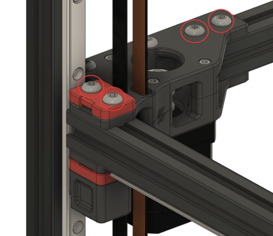 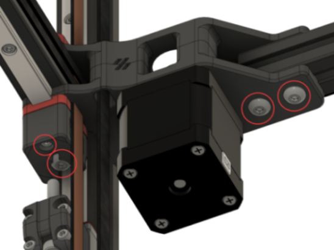 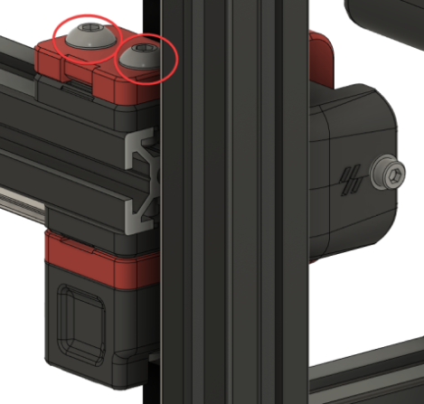 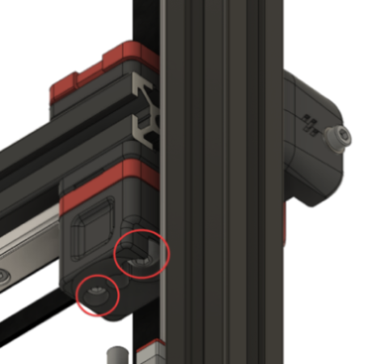
{kind=link}
{kind=link}
{kind=link}
{kind=link}
What you're looking at: The same treatment on the two A/B drive blocks and the two front idler blocks, the other four printed assemblies clamped to the Y extrusions. With all six sliding, the gantry rectangle can be reshaped in both directions.
Parts: none.
Do: Same treatment on both A/B drive units, top and bottom, and on both front idler assemblies, top and bottom. Voron repeats one warning on each: "Don't overdo the belt clamps!" Voron steps 8.2 and 8.3.
Check
All six printed assemblies on the Y extrusions can be nudged along the extrusion by hand. Every belt is still clamped.
Source: Voron docs § V2 Gantry Squaring, step 8.2–8.3 · images ABLoosen-Top.png, ABLoosen-Bottom.png, IdlersLoosen-Top.png, IdlersLoosen-Bottom.png
{kind=link}
{kind=link}
{kind=link}
{kind=link}
Step 06b.11 — Level the gantry onto the Z joints¶
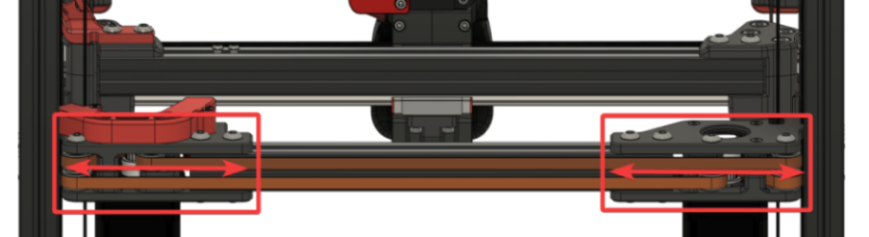 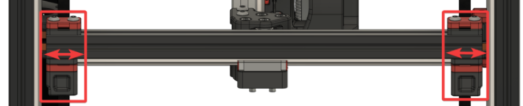 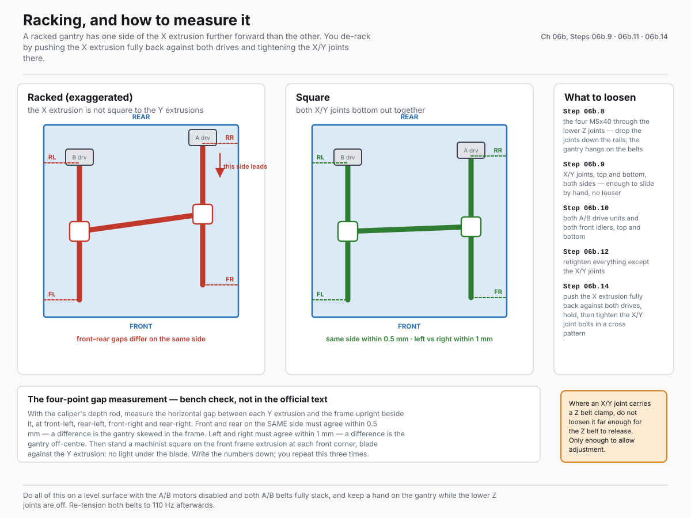
{kind=link}
{kind=link}
{kind=link}
What you're looking at: Slide the six loosened assemblies along their extrusions until the gantry's four corners land over the four lower Z joints. Voron's two conditions: the Z joints feel flush along the side, and the M5×40 slides in without hitting the sides.
Parts: none.
Do:
- Slide the six loosened assemblies until the gantry sits on the four lower Z joints.
- At each corner raise the lower joint and start the M5×40 by hand: it drops in without coaxing.
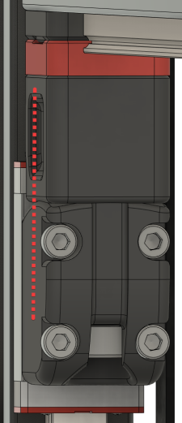 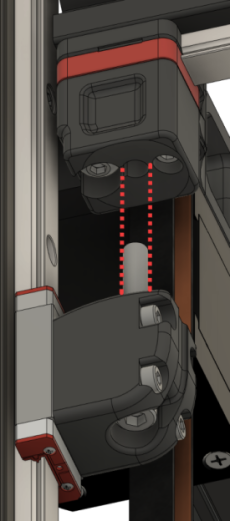 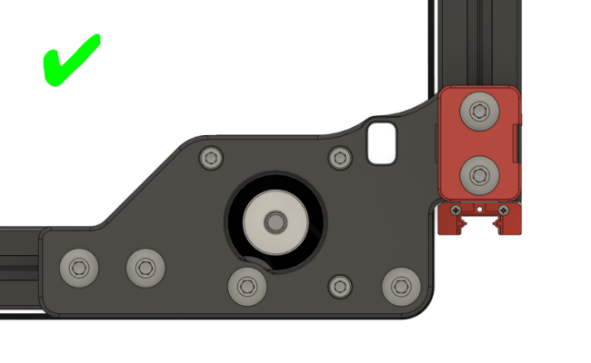 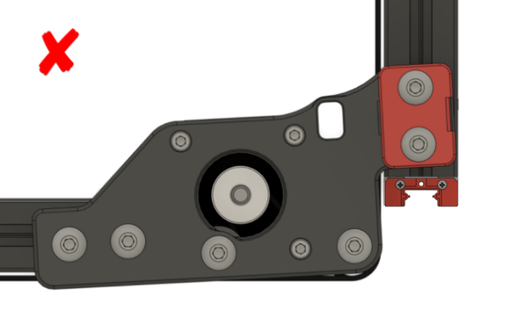
{kind=link}
{kind=link}
{kind=link}
{kind=link}
Check
Both Voron conditions met at all four corners, no A/B joint rotated, and the four-point gap measurement inside tolerance.
The four-point gap measurement (bench check, not in the official text)
With the caliper's depth rod, measure the horizontal gap between each Y extrusion and the frame upright beside it, at front-left, rear-left, front-right and rear-right. Front and rear on the same side must agree within 0.5 mm — a difference is the gantry skewed in the frame. Left and right must agree within 1 mm — a difference is the gantry off-centre. Then stand a machinist square on the front frame extrusion at each front corner, blade against the Y extrusion: no light under the blade at either corner. Write the numbers down; you repeat this at 06b.12 and 06b.14.
| Point | Measured (mm) | Pass |
|---|---|---|
| Front-left (left Y ↔ front-left upright) | ||
| Rear-left (left Y ↔ rear-left upright) | ||
| Front-right (right Y ↔ front-right upright) | ||
| Rear-right (right Y ↔ rear-right upright) |
Source: Voron docs § V2 Gantry Squaring, step 9.1–9.2 · images XAdjust.png, YAdjust.png, Alignment-Side.png, Alignment-Hole.png, Alignment-AB-Good.png, Alignment-AB-Bad.png
{kind=link}
{kind=link}
{kind=link}
{kind=link}
{kind=link}
{kind=link}
Step 06b.12 — Retighten everything except the X/Y joints¶
(no image — see text)
What you're looking at: Everything you loosened gets tightened again except the XY joints. Those stay free because the next step pushes the X extrusion hard against the two drive units and tightens the joints in that position.
Parts: none.
Do: Tighten every extrusion bolt you loosened at 06b.9–06b.10 except the three joint-to-beam bolts at each X/Y joint, which are tightened during de-racking. The Z belt-clamp pair stays untouched. Re-run the flush-and-bolt-slides check at all four corners. Voron step 10.
Check
A/B joints and front idlers are tight; the M5×40 still starts by hand at all four Z joints; the four-point measurement from 06b.11 is unchanged.
Source: Voron docs § V2 Gantry Squaring, step 10
Step 06b.13 — Reinstall the lower Z joints, lightly¶
{kind=link}
{kind=link}
What you're looking at: The four M5×40 go back in, light again. Light because the de-racking and the QGL runs that follow both need the joints free to articulate; they get their only full tighten hot, at Ch 14.
Parts: M5×40 SHCS ×4.
Do: Slide the four lower joints back up and run one M5×40 into each. Lightly only: the joint must still articulate freely. Voron step 11.
Check
All four in. Each joint still articulates when you push the gantry corner sideways.
Source: Voron docs § V2 Gantry Squaring, step 11 · CAD: Voron 2.4r2 STEP @ de7e89d
Step 06b.14 — De-rack the gantry, then tighten the X/Y joints¶
{kind=link}
What you're looking at: Racking is the gantry sitting as a parallelogram instead of a rectangle: QGL passes happily on a racked gantry and the parts come out skewed. Pushing the X extrusion hard against both drive units squares it against the only reference the machine has.
Parts: none.
Do: A/B motors disabled, belts still slack: push the X extrusion fully back against both drives until both joints bottom out. Hold it there and tighten the three joint-to-beam bolts at each joint, cross pattern, a bit at a time.
Still not the belt-clamp pair. The Voron doc delegates the method to Nero3D's de-racking video rather than writing it out; this is that method in words.
Voron's own note on this step: "Make sure to come back here afterwards! The following steps are still important."
Check
Pushed fully back, both X/Y joints contact their drives at the same instant; the square shows square at both front corners, forward and back.
If one side still leads
Loosen the X/Y joint bolts and repeat — the extrusion crept while they came up. If racking persists after two attempts, the community fallback is to loosen each A/B belt's anchor at the X carriage until the belt slides through under a firm pull, pull both belts to equal tension with pliers while feeling the tooth engagement, then re-anchor. Described in the Voron forum's de-racking thread. Re-measure the four points from 06b.11 afterwards and confirm the same-side pair still agrees within 0.5 mm.
Source: Voron docs § V2 Gantry Squaring, step 12 · Nero3D — de-racking video · Voron forum — de-racking thread · CAD: Voron 2.4r2 STEP @ de7e89d
Step 06b.15 — Re-tension the A/B belts to 110 Hz (provisional, cold)¶
(no image — see text)
What you're looking at: The A/B belts get their second tension here, still provisional, because 06b.6 released whatever Ch 07 set. 110 Hz measured over a 150 mm span is Voron's figure; a plucked frequency only means something with a stated span.
Parts: none.
Do: Move the X extrusion until the X/Y idler centres are 150 mm from the front idlers. Pluck that span and adjust each front tensioner to ≈110 Hz, going back and forth until both match. Move the extrusion and re-check.
Voron step 13. 110 Hz ≈ 2 lb, deliberately at the low end. Ignore voronldo.com's 80–100 Hz figure for a 350: it names no span, which is what makes a frequency meaningful (survey §4.3). This is a cold, open-machine working value; Ch 14 Step 14.4 sets it for the last time with the panels on, cold and door open, just before the soak, so do not chase the last few Hz here. src
Check
A and B read within a few Hz of each other at ~110 Hz, and still do after the gantry has moved and returned.
Source: Voron docs § V2 Gantry Squaring, step 13 · Voron docs § Secondary printer tuning — A/B and Z belts · survey §4.3 / §7.5
Step 06b.16 — Hand off: RESTART, then back to Ch 13 Step 13.35 — panels (Ch 11 Part B) and Ch 14's final tension and hot lock-in come after¶
(no image — see text)
What you're looking at: Voron's steps 14–17, the heat soak, the hot QGL runs and the hot tighten, need a chamber that closes, and the panels are not on yet. So squaring stops here, cold: gantry square and de-racked, Z joints light, A/B belts at a working tension.
Parts: none.
Do:
- Run
RESTART, so the idle timeout from 06b.1 returns to the config default. - Go back to Ch 13 Step 13.35 and finish Ch 13.
- Leave the four M5×40 light: nothing set in this part is final.
Voron step 17, done now rather than in Ch 14 because the M5×40 stay light for days, not minutes. That step is G28, re-QGL, Z=0, bed mesh and the first cube. Then fit the back, side and top panels and the Clicky-Clack door (Ch 11 Part B). Final A/B and Z belt tension, cold and door open at 14.4–14.5, then the heat soak, the 3–5 hot QGL runs and the hot tighten of the four M5×40 Z-joint bolts at 14.6, are Ch 14 Part B.
Check
RESTART completed, SET_IDLE_TIMEOUT back to the config default, the four M5×40 still light, and the gantry holding its height.
Source: Voron docs § V2 Gantry Squaring, steps 14–17 · Ch 14 Part B — Belts, final tension · Ch 11 Part B
Checkpoint 06b¶
-
SET_IDLE_TIMEOUT TIMEOUT=99999set first (Step 06b.1), machine homed and QGL'd (06b.2) before any belt was plucked or any bolt touched - Four Z belts measured at 140 Hz over a 150 mm span (Step 06b.3), all four within ±5 Hz — set finally at Ch 14 Step 14.5 (cold, same session as 14.4)
- Only
stepper_xandstepper_ywere disabled; Z motors held the gantry throughout - A/B belts were fully slack before any adjustment was made
- At every XY joint only the three joint-to-beam bolts (Steps 05.38–05.39) were loosened; the M3×30 / M5×30 Z belt-clamp pair was never touched
- Both A/B joints checked for rotation against the good/bad reference images
- At all four Z joints, the M5×40 starts by hand with the joint raised — no coaxing
- Four-point gantry-to-frame gap recorded: same-side front/rear within 0.5 mm, left/right within 1 mm
- Machinist square shows no light at both front corners, gantry forward and gantry back
- A/B belts re-tensioned to a provisional 110 Hz over a 150 mm span, matched to each other — final value is Ch 14 Step 14.4
- Four Z joint M5×40 bolts still light — they are tightened hot in Ch 14, not here
-
RESTARTrun at Step 06b.16; idle timeout back to default; next page is Ch 13 Step 13.35
Common mistakes (06b)¶
- Doing this before Ch 13. Four of the seventeen steps are g-code. Attempting it dry means guessing at "level" with no QGL to check against.
- Plucking the Z belts before the idle timeout is raised and the machine is homed. Klipper's default 600 s timeout releases the Z motors mid-step and the gantry sags onto whatever is under it. Steps 06b.1–06b.2 first, every time.
- Tensioning the A/B belts in Ch 07 — or here — and treating that as final. Step 06b.6 undoes Ch 07's, and Ch 14 Step 14.4 sets the real one with the panels on, cold, immediately before the closed-chamber soak. Both earlier values are working values.
- Loosening the wrong bolts at step 06b.9. The gantry is hanging on the Z belts; the M3×30 / M5×30 pair through each Z bearing block holds both ends of that belt. Only the three joint-to-beam bolts move — and at 06b.10, "don't overdo the belt clamps" either.
- Tightening the Z joints cold, here. The point of the hot lock-in (Ch 14 Step 14.6) is freezing the gantry at full thermal expansion; cold-tightening throws that away and shows up as first-layer inconsistency. They stay light from 06b.13 until Ch 14, and light through the rest of Ch 13.
- Skipping the de-racking step because QGL passed. QGL levels the gantry in Z; it says nothing about whether the X extrusion is square to the Y axes. A racked gantry passes QGL happily and prints skewed parts.
- Believing voronldo.com's tension numbers. 80–100 Hz (A/B) and 110–130 Hz (Z) conflict with the official figures and name no span. Use 110 Hz and 140 Hz over 150 mm (survey §4.3).
Next¶
After Part A: Ch 07 — A/B belts and tensioning (manual p.124–145) once Checkpoint 06 is clear; tension provisionally, because Part B will release it. After Part B: back to Ch 13 Step 13.35 (re-heat, re-QGL, Z=0, mesh, first cube); then Ch 11 Part B (panels and door); then Ch 14 Steps 14.4–14.6 for final belt tension (cold), then the hot soak and the hot Z-joint tighten.
Source: Voron docs § V2 Gantry Squaring, steps 14–17
Good stopping point · ~60 min since the last one
gantry squared and de-racked cold, A/B belts at a provisional 110 Hz, four Z-joint M5×40 still light, RESTART run. Part B is one session by design: it starts by releasing all A/B tension, so stopping part-way leaves the machine unusable. Do not tighten the Z joints and do not chase the belt numbers — both are Ch 14's (belts cold at 14.4–14.5, joints hot at 14.6).